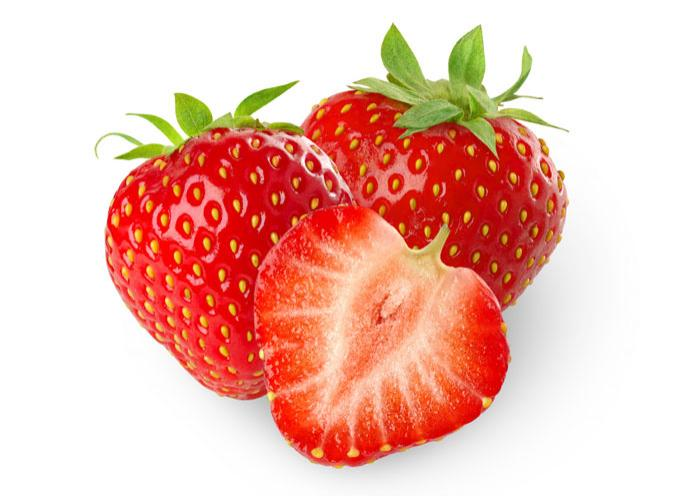
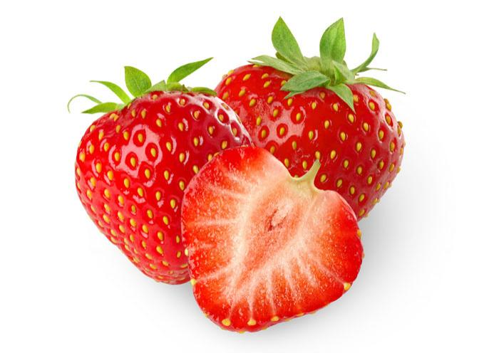

The origin of the lemon is unknown, though lemons are thought to have first grown in Assam (a region in northeast India), northern Burma or China. A study of the genetic origin of the lemon reported it to be hybrid between bitter orange (sour orange) and citron.
Lemons entered Europe near southern Italy no later than the second century AD, during the time of Ancient Rome. However, they were not widely cultivated. They were later introduced to Persia and then to Iraq and Egypt around 700 AD. The lemon was first recorded in literature in a 10th-century Arabic treatise on farming, and was also used as an ornamental plant in early Islamic gardens. It was distributed widely throughout the Arab world and the Mediterranean region between 1000 and 1150.
The first substantial cultivation of lemons in Europe began in Genoa in the middle of the 15th century. The lemon was later introduced to the Americas in 1493 when Christopher Columbus brought lemon seeds to Hispaniola on his voyages. Spanish conquest throughout the New World helped spread lemon seeds. It was mainly used as an ornamental plant and for medicine. In the 19th century, lemons were increasingly planted in Florida and California
In 1747, James Lind's experiments on seamen suffering from scurvy involved adding lemon juice to their diets, though vitamin C was not yet known.
The garden strawberry (or simply strawberry; Fragaria × ananassa) is a widely grown hybrid species of the genus Fragaria (collectively known as the strawberries). It is cultivated worldwide for its fruit. The fruit (which is not a botanical berry, but an aggregate accessory fruit) is widely appreciated for its characteristic aroma, bright red color, juicy texture, and sweetness. It is consumed in large quantities, either fresh or in such prepared foods as preserves, fruit juice, pies, ice creams, milkshakes, and chocolates. Artificial strawberry flavorings and aromas are also widely used in many products like lip gloss, candy, hand sanitizers, perfume, and many others.
The garden strawberry was first bred in Brittany, France, in the 1750s via a cross of Fragaria virginiana from eastern North America and Fragaria chiloensis, which was brought from Chile by Amédée-François Frézier in 1714. Cultivars of Fragaria × ananassa have replaced, in commercial production, the woodland strawberry (Fragaria vesca), which was the first strawberry species cultivated in the early 17th century.
Technically, the strawberry is an aggregate accessory fruit, meaning that the fleshy part is derived not from the plant's ovaries but from the receptacle that holds the ovaries. Each apparent "seed" (achene) on the outside of the fruit is actually one of the ovaries of the flower, with a seed inside it.
The orange (specifically, the sweet orange) is the fruit of the citrus species Citrus × sinensis in the family Rutaceae
The fruit of the Citrus × sinensis is considered a sweet orange, whereas the fruit of the Citrus × aurantium is considered a bitter orange. The sweet orange reproduces asexually (apomixis through nucellar embryony); varieties of sweet orange arise through mutations.
The orange is a hybrid, between pomelo (Citrus maxima) and mandarin (Citrus reticulata). It has genes that are ~25% pomelo and ~75% mandarin; however, it is not a simple backcrossed BC1 hybrid, but hybridized over multiple generations. The chloroplast genes, and therefore the maternal line, seem to be pomelo. The sweet orange has had its full genome sequenced. Earlier estimates of the percentage of pomelo genes varying from ~50% to 6% have been reported.
Sweet oranges were mentioned in Chinese literature in 314 BC. As of 1987, orange trees were found to be the most cultivated fruit tree in the world. Orange trees are widely grown in tropical and subtropical climates for their sweet fruit. The fruit of the orange tree can be eaten fresh, or processed for its juice or fragrant peel. As of 2012, sweet oranges accounted for approximately 70% of citrus production.